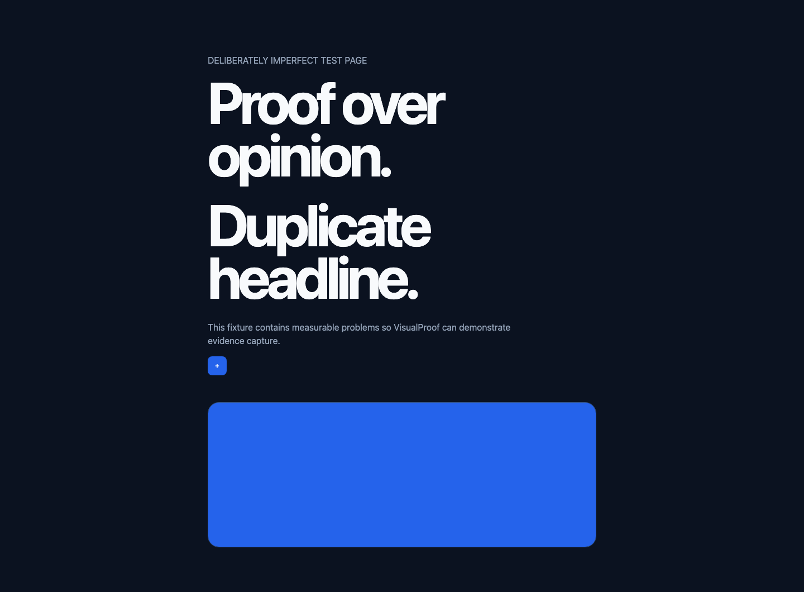
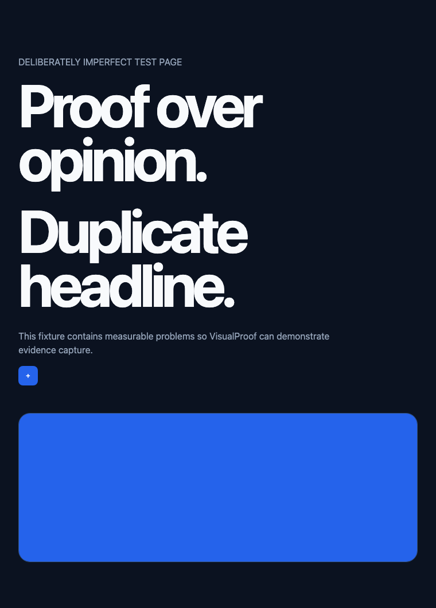

medium
meta-descriptionMeta description is missing.
meta[name="description"] is empty or absent
meta-descriptionmeta[name="description"] is empty or absent
h1-countFound 2 H1 elements
image-altdata:image/svg+xml,%3Csvg xmlns='http://www.w3.org/2000/svg' width='760' height='260'%3E%3Crect width='100%25' height='100%25' fill='%232563eb'/%3E%3C/svg%3E
console-errorsDemo console error: intentional
touch-targetOpen menu (34×34px)
oversized-heading“Proof over opinion.” renders at 104px (96px limit)

meta-descriptionmeta[name="description"] is empty or absent
h1-countFound 2 H1 elements
image-altdata:image/svg+xml,%3Csvg xmlns='http://www.w3.org/2000/svg' width='760' height='260'%3E%3Crect width='100%25' height='100%25' fill='%232563eb'/%3E%3C/svg%3E
horizontal-overflowContent extends 370px beyond the viewport
console-errorsDemo console error: intentional
touch-targetOpen menu (34×34px)
oversized-heading“Proof over opinion.” renders at 104px (64px limit)
